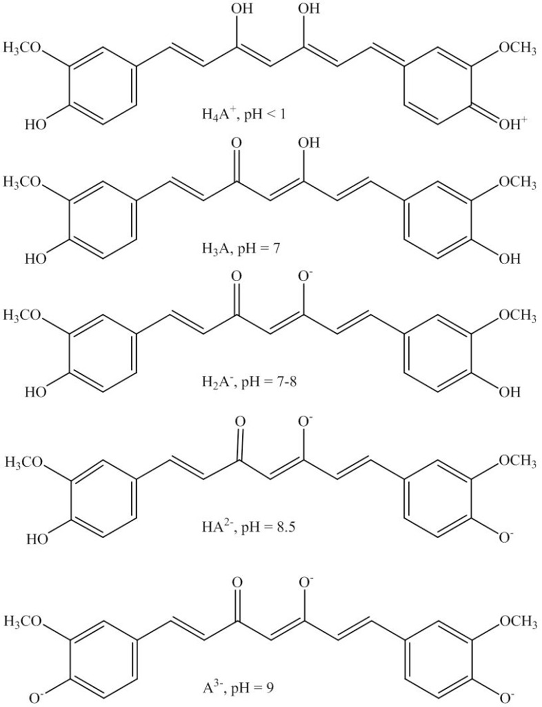
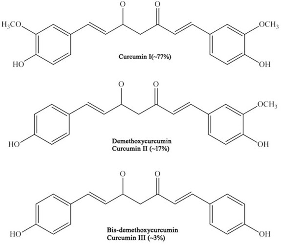
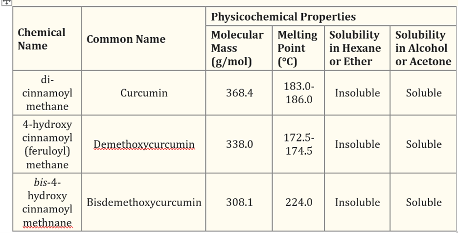
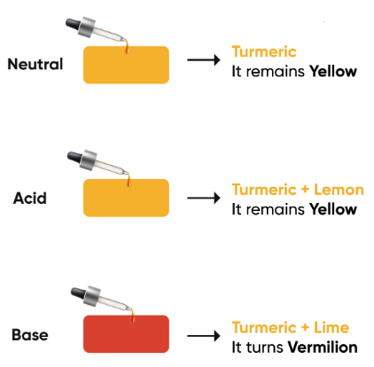
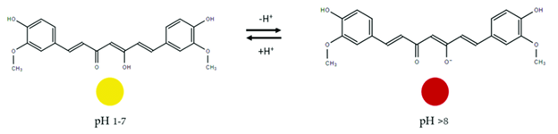

Behind the Seasoning: Curry Powder
Task 2: Fun Facts
Synthesis

The first successful curcumin synthesis was reported in 1918 by Lampe through a multi-step organic reaction. It began with carbomethoxyferuloyl chloride reacting with ethyl acetoacetate. However, this route involved five complex steps to ultimately yield curcumin.
In the late 1940s, Pabon developed a more efficient synthesis that became the standard approach going forward. The key reaction involved 2,4-pentanedione (acetyl acetone) complexing with boron trioxide to prevent self-condensation. Ortho-substituted aromatic aldehydes, such as ferulic or sinapic aldehyde, were then added.
A primary or secondary amine catalyst like n-butylamine was necessary to deprotonate the diketone alkyl groups. Without this basic environment, the condensation would not proceed. Polar aprotic solvents like toluene or xylene were used to solubilize reactants and facilitate separation of the final product.
It was important the reaction be run under anhydrous conditions, as even trace water could hydrolyze the boron-diketone complex, reducing yields. To drive the reaction to completion, alkyl borates like triethyl borate were added as scavengers to remove any water formed during condensation.
Once the boron-curcuminoid adduct precipitated from solution after heating, it was isolated via repeated washing and precipitation. The boron could then be removed under slightly acidic conditions, such as aqueous methanol at pH 5.8, yielding pure curcumin.
This multi-step boron-mediated approach developed by Pabon remains the basis for most curcumin synthesis methods today. Let me know if any part of the process requires further explanation or expansion.
Fun Facts
Here are some additional interesting facts about curcumin:
- Curcumin acts as a natural fluorescent tag in the body. Scientists have used this property to track curcumin's absorption and distribution in cells/tissues using fluorescence microscopy.
- Researchers have found evidence that curcumin may help reduce symptoms of depression by impacting brain-derived neurotrophic factor (BDNF) and other neurotransmitters involved in mood regulation.
- Curcumin appears to have anti-aging effects at the cellular level by reducing oxidative stress and boosting cellular protection pathways. Some studies show it may help delay onset of aging-related diseases.
- The bright yellow/orange color of turmeric has led to its historical use as a natural food coloring and textile dye. Traces of historical turmeric dyes have even been found in ancient Egyptian fabrics and works of art.
- Curcumin's low toxicity profile and wide range of potential health benefits have prompted some scientists to dub it a "near-perfect" natural compound for disease prevention and treatment.
Task 3: Intermolecular & Solubility
Curcumin is comprised of three related compounds that make up the curcuminoid complex found in turmeric at levels of 2.5-6%. The main component is curcumin I, comprising about 77%. The others are curcumin II (demethoxycurcumin) at 17% and curcumin III (bisdemethoxycurcumin) at 3%.
All three curcuminoids have similar chemical structures consisting of aromatic rings linked by a central carbon-carbon double bond. This structure allows for π-π stacking interactions between adjacent molecules. Additionally, hydrogen bonding occurs between hydroxyl and methoxy functional groups on the aromatic rings.
These intermolecular forces influence curcumin's solubility properties. It is insoluble in nonpolar solvents like hexane and ether due to an inability to participate in dipole-dipole or hydrogen bonding interactions. However, curcumin is soluble in polar protic solvents like alcohols and acetones, where hydrogen bonding with the solvent is possible.
 Curcumin exists as H3A, the neutral form, in acidic solutions from pH 1-7 where it appears yellow. In this form, the phenolic hydroxyl groups are protonated.
As pH increases from 7-8, the first pKa is reached and one proton dissociates from H3A. This forms the conjugate base H2A-, shifting the electron density slightly.
Structure
In a solution of pH 1–7, curcumin is yellowish and mostly exists in the neutral form (H3A). Curcumin is more stable in acidic conditions probably owing to its conjugated diene structure which is gradually destroyed as the proton is removed during dissociation of phenolic groups in the curcumin structure (H2A−, HA2− and A3−) at higher pH, thus causing curcumin to be more prone to degradation as detected using HPLC. In the pH range of 8.08 to 8.75, it is postulated that curcumin exists in equilibrium in three forms: H3A, H2A− and HA2−. The kinetic behavior of curcumin degradation in various pH systems reveals different protonated forms of curcumin at varying pH levels. At pH < 1, curcumin appears in protonated form (H4A+). In a solution of pH 1–7, curcumin exists in the neutral form (H3A). In the pH range of 8.08 to 8.75, it is postulated that curcumin exists in equilibrium in three forms: H3A, H2A and HA2.
From the above experiment, curcumin is found to be unstable in solution form. Stability increases in acidic and decreases as the pH increases. Also in the presence of light the degradation was much higher as compared to in the absence of light. It has been found that that curcumin at pH 1.2 is highly stable in the absence of light as compared to pH 1.2 in the presence of light. Stability decreases as the pH of the solution increases with the formation of its degraded products such as ferulic acid and vanillin.
Photodegradation of Curcumin
Curcumin is also sensitive to light and is rapidly decolorized upon exposure to UV light. Complete color loss of curcuminoid pigments in turmeric can occur within three days of exposure to 900 footcandle of visible light. The dried powder form of curcumin was found to be more stable to photo-oxidation compared to the alcoholic extract. The rate of curcumin photodegradation was significantly influenced by the nature of solvents used. The stability of curcumin in various solvents followed the decreasing trend: methanol (92.7 h) > ethyl acetate (15.1 h) > acetonitrile (6.3 h) > chloroform (2.7 h). The protective or destabilizing effect of different solvents could be attributed to the formation of inter- and intra-molecular bondings, which were solvent-dependent. The combination effect of air and light was found to be more detrimental than light alone, while the absorption of curcumin in water had no apparent effect on curcumin photo-stability. In air-sparged conditions in methanol, the order of photochemical stability of different curcuminoid complexes was curcumin > demethoxycurcumin > bis-demethoxycurcumin.
Curcumin ((1E,6E)-1,7-bis(4-hydroxy-3-methoxyphenyl)hepta-1,6-diene-3,5-dione) is derived from the rhizome of the turmeric plant (Curcuma longa). Turmeric is native to South Asia (e.g., India, China, and Indonesia) and is cultivated for its traditional medicinal properties.
Curcumin exists as a yellow-orange solid, with a molecular weight of 368 g/mol and a melting point of 183 °C. Chemically, it is a polyphenolic compound with two aromatic rings, each with one hydroxy and one methoxy substituent. A seven-carbon chain with two α-β unsaturated carbonyl groups links the rings.
Commercially available curcumin contains three primary components - diferuloylmethane, demethoxycurcumin, and bisdemethoxycurcumin - collectively referred to as "curcuminoids."
Discussion
The biological and physiological properties of curcumin have been extensively examined in the context of neurodegenerative and inflammatory diseases. Curcumin exhibits antioxidant and anti-inflammatory properties and is studied as an anticancer agent.
Despite its low bioavailability, curcumin's efficacy can be enhanced through combination with adjuvants such as piperine. While its membrane transport mechanisms are not fully characterized, curcumin is well tolerated and shows potential as a chemopreventive or therapeutic agent.